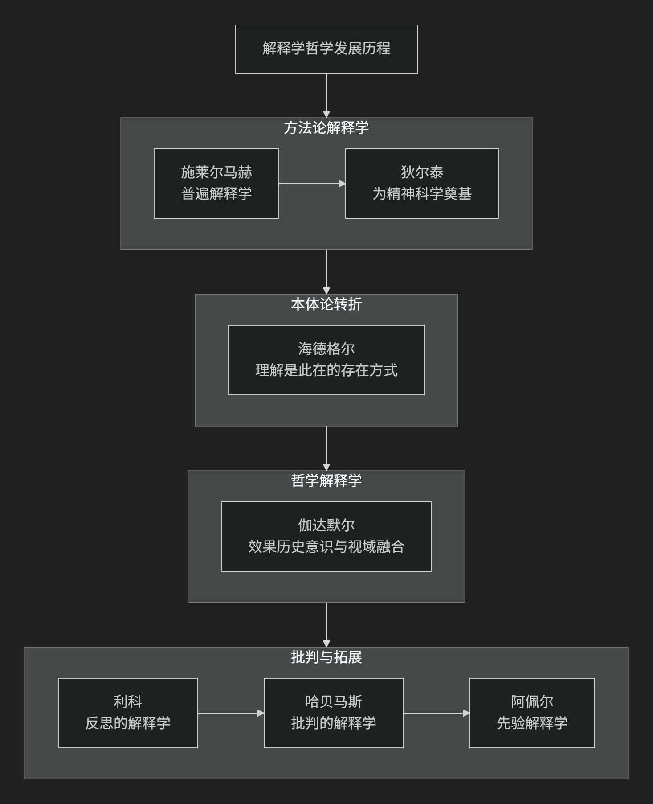

Hermeneutics
基于解释学（Hermeneutics）理论视角。
解释学是一门关于 理解、解释和意义 的哲学学科。其核心思想经历了从 方法论 （如何正确解释文本）到 认识论 （理解如何成为可能），再到 本体论 （理解是人的基本存在方式）的根本性转变。
其核心思想可以概括为：“理解”不是主体认识客体的方法，而是人存在于世的基本方式。理解具有历史性、语言性和实践性，总是发生在特定的“前见”和“视域”中，并通过“解释学循环”实现“视域融合”。
以下流程图清晰地展示了解释学发展的主要阶段、核心转折及代表人物：

解释学核心思想的演变
一、方法论解释学：追寻客观意义
早期解释学旨在为文本解释（尤其是《圣经》和古典文献）建立一套普遍规则，以消除误解，获得客观意义。
核心关切：如何正确理解文本的作者原意？
代表人物与思想：
-
普遍解释学：解释学不应只是特定领域的技巧，而应是适用于一切文本理解的普遍方法论。
核心命题：“比作者理解他自己更好地理解作者。” 理解的关键在于通过语法解释（语言规则）和心理解释（重构作者创作过程）的循环，把握作者自己都可能未意识到的深层意图。
威廉·狄尔泰 ：
为“精神科学”奠基：深受自然科学方法论挑战，狄尔泰试图为人文科学（历史、艺术、哲学）找到独特的方法论基础。
核心命题：“我们说明自然，但我们理解生命。” 自然需要因果“说明”，而人的生命表达（文本、行动、艺术）则需要“理解”。
方法：通过“移情”和“重新体验”，理解者进入他人的生命体验，从而获得客观知识。
-
二、本体论转折：理解是存在的方式
这一转折由海德格尔发起，将解释学从方法论提升为哲学的核心。
核心关切：“理解”如何先于主客二分，构成人之为人的根本？
代表人物与思想：
马丁·海德格尔 ：
理解是此在的存在方式：人（此在）不是先存在然后去理解，人本质上就是一种 理解着的存在。理解是我们与世界打交道的基本方式，它先于任何理论反思。
前结构：任何理解都必然基于我们已有的“前有”、“前见”和“前概念”。我们总是带着“先入之见”去理解，而非从零开始。
三、哲学解释学：历史与对话中的理解
伽达默尔在海德格尔基础上，系统构建了现代哲学解释学。
核心关切：在历史中，理解如何实际发生？
代表人物与思想：
-
效果历史意识：我们始终处于历史的影响之下，真正的理解是意识到这种影响，而非试图摆脱它。理解是历史本身的运动的一部分。
视域融合：理解不是主体侵入客体，而是 理解者的当下视域与文本的历史视域相互融合，形成一个全新的、更广阔的视域。
对话模式：理解如同对话，我们向文本提问，文本也向我们提问，在问答中真理得以显现。
-
四、批判与反思：解释学的多元发展
伽达默尔之后，解释学向多个方向拓展，与其他思想传统碰撞。
核心关切：理解是否隐含权力与意识形态？如何保证解释的正当性？
代表人物与思想：
—
核心要义总结
发展阶段 |
核心命题 |
关键概念 |
|---|---|---|
方法论解释学 |
理解是追寻作者原意或客观精神的方法，旨在消除误解。 |
作者意图、心理重构、移情、生命表达 |
本体论转折 |
理解是此在在世存在的基本方式，先于主客二分。 |
此在、前结构、在世存在 |
哲学解释学 |
理解是效果历史事件中的视域融合，以对话模式进行。 |
效果历史、视域融合、问答逻辑、实践智慧 |
批判与反思 |
理解需批判意识形态扭曲，并通过叙事与反思建构自我。 |
意识形态批判、叙事身份、反思性、交往理性 |
总结
总而言之，解释学的核心思想从 “如何正确解读文本” 这一具体问题出发，最终发展为对 “人如何理解自身和世界” 这一根本哲学问题的深刻探索。它揭示了我们作为历史性的、语言性的存在，其理解活动永远是 开放的、创造性的、处于无尽对话之中 的。这一思想彻底改变了我们对知识、真理和理性的传统看法，使其成为20世纪以来最具影响力的哲学思潮之一。
[学派比较]